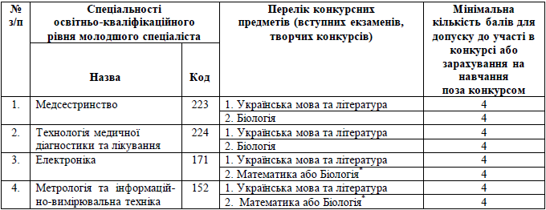

Вступ до коледжу
Терміни прийому документів
База 9 класів:
З 11 до 20 липня 2016 року до 18.00
База 11 класів:
З 11 до 27 липня 2016 року до 18.00
Абітурієнти подають такі документи:
- Пред’являється документ, що засвідчує особу (паспорт або свідоцтво про народження), при цьому подається дві завірені ксерокопії відповідного документу;
- Документ про освітньо–кваліфікаційний рівень (атестат, база 11 класів або свідоцтво про базову загальну середню освіту, 9 класів; одночасно подається одна завірена ксерокопія відповідного документу;
- Сертифікати Українського центру оцінювання якості освіти (оригінали або завірені ксерокопії) з української мови та літератури, біології (база 11 класів);
- Пред’являється ідентифікаційний номер, при цьому подаються дві завірені ксерокопії коду;
- Медична довідка за формою О 86–О (оригінал або її завірену ксерокопію);
- 6 фотокарток розміром 3x4 см;
- Документи, які дають право на пільги (в разі потреби);
- Військовий квиток (посвідчення про приписку до призовної дільниці);
- Папку білого кольору для зберігання документів абітурієнта‚ один зошит і 2 конверта по Україні.
Розклад вступних випробувань (на базі 9 класів)
Підготовчі курси
Підготовчі курси є структурним підрозділом коледжу. Основне завдання підготовчих курсів - забезпечити якісну підготовку учнів для вступу до коледжу. Для таких спеціальностей коледжу як «Лікувальна справа», «Сестринська справа», «Лабораторна діагностика», «Акушерська справа» розроблені два навчальних плана на 36 тижнів та 18 тижнів.
Навчальний план розрахований на 36 тижнів для груп (з жовтня по червень) з предметів: біологія, хімія, українська мова.
Навчальний план розрахований на 18 тижнів (з січня по червень) з предметів: біологія, хімія, українська мова.
Навчальний план розрахований на 18 тижнів (з січня по червень) з предметів: математика, українська мова для медико-технічного відділення.
Форма навчання - вечірня (будні дні з 16.30 до 19.30). Заняття тривалістю 4 академічні години, двічі на тиждень з кожної дисципліни.
Заняття проводяться в аудиторіях коледжу викладачами на високому професійному рівні за затвердженими програмами.
Навчання на підготовчих курсах допоможе вам повторити весь програмний матеріал (5-11 класів) з хімії, біології, української мови та математики. Ми допомагаємо систематизувати вже наявні знання і підготуватися до зовнішнього незалежного оцінювання для випускників 11 -х класів і для вступних іспитів випускників 9 -х класів. Для учнів підготовчих курсів проводяться поточні та тематичні підсумкові тестування, а також тренувальні контрольні роботи, в яких використовуються завдання, за ступенем складності наближені до завдань вступних іспитів і незалежного тестування.
Щорічно на курсах навчаються понад 100 слухачів, за останній рік з’явилася тенденція до збільшення їх кількості. За підсумками минулих років більшість випускників наших курсів стали студентами ХБМК № 1
Провадження освітньої діяльності у Харківському медичному коледжі №1 здійснюється відповідно до ліцензії Міністерства освіти і науки (серія АЕ № 636453, дата отримання - 04 червня 2015 року, термін дії ліцензії - до 01.07.2025 року).
Правила прийому розроблені Приймальною комісією Харківського медичного коледжу №1 (надалі – Приймальна комісія Коледжу) відповідно до Умов прийому до вищих навчальних закладів України, затверджених наказом Міністерства освіти і науки України № 1085 від 15 жовтня 2015 року та зареєстрованих у Міністерстві юстиції України 04 листопада 2015 року за № 1351/27796.
І. Загальні положення
1.У цих Правилах терміни вживаються в таких значеннях:
відбіркова комісія – структурний підрозділ приймальної комісії, який виконує її функції у відокремленому структурному підрозділі вищого навчального закладу;
вступне випробування – перевірка рівня знань, умінь та навичок, здібностей до певного виду діяльності з конкурсного предмета, що проводиться у формі зовнішнього незалежного оцінювання, співбесіди, вступного іспиту, творчого конкурсу, фахового випробування тощо;
вступний іспит – оцінювання знань особи та здатності до опанування навчальної програми певного ступеня (освітньо-кваліфікаційного рівня) вищої освіти;
вступник – особа, яка подала заяву про допуск до участі в конкурсі на навчання до вищого навчального закладу;
Єдина державна електронна база з питань освіти (далі – Єдина база) – автоматизована система збирання, верифікації, оброблення, зберігання та захисту даних, у тому числі персональних, щодо надавачів та отримувачів освітніх послуг з метою забезпечення потреб фізичних та юридичних осіб;
конкурсний бал – сума балів вступника, до якої входять результати вступних випробувань, та інших показників, що обраховується відповідно до цих Умов та правил прийому до вищого навчального закладу для осіб, що вступають для здобуття відповідного ступеня (освітньо-кваліфікаційного рівня) вищої освіти;
конкурсний предмет – навчальний предмет, рівень навчальних досягнень з якого враховується при проведенні конкурсного відбору на навчання до вищого навчального закладу;
право на зарахування поза конкурсом – право вступника, передбачене законом, щодо зарахування до вищого навчального закладу без участі в загальному відборі, що реалізується відповідно до цих Умов;
право першочергового зарахування – право вступника на зайняття вищої позиції в рейтинговому списку при однаковому з іншими вступниками конкурсному балі;
рейтинговий список вступників – список вступників за черговістю зарахування на навчання за спеціальностями (спеціалізаціями), що формується відповідно до цих Умов та правил прийому до вищого навчального закладу;
співбесіда – перевірка рівня знань, умінь та навичок, здібностей до певного виду діяльності з конкурсного предмета (предметів), за результатами якої приймається протокольне рішення щодо включення вступника до рейтингового списку;
технічна помилка – описка, граматична помилка, яка допущена уповноваженою особою приймальної комісії під час внесення даних заяви до Єдиної бази, що підтверджується актом про допущену технічну помилку, сформованим в Єдиній базі;
фахове випробування – форма вступного випробування для вступу на основі здобутого ступеня або освітньо-кваліфікаційного рівня.
Термін "ваучер" вживається у значенні, наведеному в Законі України "Про зайнятість населення".
2. Прийом на навчання на перший курс з нормативним та скороченим строком навчання проводиться в межах ліцензованого обсягу за спеціальностями (спеціалізаціями) відповідно до Переліку галузей знань і спеціальностей, за якими здійс-нюється підготовка здобувачів вищої освіти, затвердженого постановою Кабінету Міністрів України від 29 квітня 2015 року № 266. Прийом на навчання на другий та наступні курси з нормативним строком навчання здійснюється в межах вакантних місць ліцензованого обсягу за спеціальностями (напрямами підготовки) відповідно до переліку спеціальностей, напрямів підготовки, за якими здійснювався набір на перший курс.
3.Фінансування підготовки фахівців у коледжі здійснюється:
за рахунок видатків державного та місцевих бюджетів (за державним замовленням, за кошти державного бюджету);
за рахунок цільових пільгових державних кредитів. Отримання цільових пільгових державних кредитів для здобуття вищої освіти здійснюється відповідно до Порядку надання цільових пільгових державних кредитів для здобуття вищої освіти, затвердженого постановою Кабінету Міністрів України від 16 червня 2003 року № 916;
за кошти фізичних та юридичних осіб.
4. Харківський медичний коледж №1 (надалі – Коледж) оголошує прийом на підготовку фахівців з вищою освітою за освітньо–кваліфікаційними рівнями та спеціальностями відповідно до ліцензії в межах ліцензованого обсягу (див. додаток 1).
5. Громадяни України мають право безоплатно здобувати вищу освіту в державних і комунальних вищих навчальних закладах на конкурсній основі відповідно до стандартів вищої освіти, якщо певний ступінь вищої освіти громадянин здобуває вперше за кошти державного або місцевого бюджету.
6. Громадяни України, які не завершили навчання за кошти державного або місцевого бюджету за певним ступенем освіти, мають право повторно безоплатно здобувати вищу освіту в Харківському медичному коледжі №1 за тим самим ступенем освіти за умови відшкодування до державного або місцевого бюджету коштів, витрачених на оплату послуг з підготовки фахівців, відповідно до Порядку відшкодування коштів державного або місцевого бюджету, витрачених на оплату послуг з підготовки фахівців, затвердженого постановою Кабінету Міністрів України від 26 серпня 2015 року № 658.
7. Громадяни України мають право безоплатно здобувати вищу освіту за другою спеціальністю у Харківському медичному коледжі №1, якщо за станом здоров’я вони втратили можливість виконувати службові чи посадові обов’язки за отриманою раніше кваліфікацією, що підтверджується висновками медико-соціальної експертної комісії, та в інших випадках, передбачених законом.
8.Громадяни України, які проживають на тимчасово окупованій території або переселилися з неї, мають право на здобуття або продовження здобуття певного ступеня (освітньо-кваліфікаційного рівня) вищої освіти на території інших регіонів України за рахунок коштів державного бюджету з наданням місць у гуртожитках на час навчання.
9. Для вступників, які потребують поселення у гуртожиток під час вступу, надається 20 місць.
Гуртожиток розташований в п’яти поверховому будинку на 4 та 5-ому поверхах.
10. Іноземці та особи без громадянства, які постійно проживають в Україні, особи, яким надано статус біженця в Україні, особи, які потребують додаткового або тимчасового захисту, та особи, яким надано статус закордонного українця і які перебувають в Україні на законних підставах, мають право на здобуття вищої освіти нарівні з громадянами України. Здобуття вищої освіти зазначеними категоріями осіб за кошти державного бюджету здійснюється в межах квот, визначених Кабінетом Міністрів України.
11.Усі особи, які здобувають вищу освіту у вищих навчальних закладах, мають рівні права та обов’язки.
12. Прийом до коледжу на всі ступені та освітньо-кваліфікаційні рівні здійснюється на конкурсній основі.
13. Не допускається одночасне навчання на денній формі навчання за кількома спеціальностями (спеціалізаціями, освітніми програмами, напрямами підготовки).
II. Організація прийому до Харківського медичного коледжу №1
1. Організацію прийому вступників до коледжу здійснює приймальна комісія (далі – приймальна комісія), склад якої затверджується наказом керівника вищого навчального закладу, який є її головою. Приймальна комісія діє згідно з положенням про приймальну комісію вищого навчального закладу, затвердженим вченою (педагогічною) радою вищого навчального закладу у відповідності до Положення про приймальну комісію вищого навчального закладу, затвердженого наказом МОН від 15 жовтня 2015 року № 1085. Положення про приймальну комісію коледжу оприлюднюється на веб-сайті вищого навчального закладу.
2. Керівник коледжу забезпечує дотримання законодавства України, у тому числі Умов правил прийому, правил прийому до коледжу, а також відкритість та прозорість роботи приймальної комісії.
3. Рішення приймальної комісії, прийняте в межах її повноважень, є підставою для видання відповідного наказу керівником коледжу.
4.Рішення приймальної комісії стосовно розподілу обсягу державного замовлення для інших категорій вступників у межах ліцензованого обсягу за факультетами, спеціальностями (спеціалізаціями, освітніми програмами, напрямами підготовки), нозологіями, профілями, мовами тощо щодо кожної спеціальності повинно бути прийняте не пізніше трьох календарних днів після доведення коледжу обсягів державного замовлення.
5. Усі питання, пов’язані з прийомом до коледжу, вирішуються приймальною комісією на її засіданнях. Рішення приймальної комісії оприлюднюються на веб-сайті коледжу, як правило, в день прийняття, але не пізніше дня, наступного після прийняття.
ІІІ. Вимоги до рівня освіти вступників
1. На навчання для здобуття освітньо-кваліфікаційного рівня молодшого спеціаліста з одночасним здобуттям повної загальної середньої освіти за денною формою навчання приймаються на перший курс особи з базовою загальною середньою освітою за результатами вступних випробувань.
2. На навчання для здобуття освітньо-кваліфікаційного рівня молодшого спеціаліста на основі повної загальної середньої освіти приймаються на другий курс (з нормативним строком навчання) або на перший курс (із скороченим строком навчання) особи, які подають для участі у конкурсі сертифікати зовнішнього незалежного оцінювання, крім випадків, зазначених у розділах VIII, X, XVIII цих Умов.
3. Коледж приймає на навчання осіб, які здобули освітньо-кваліфікаційний рівень молодшого спеціаліста, для здобуття освітньо-кваліфікаційного рівня молодшого спеціаліста за іншою спеціальністю (спеціалізацією) у межах вакантних місць ліцензованого обсягу відповідно до правил прийому до коледжу.
4. Коледж має право приймати на навчання осіб, які здобули ступінь бакалавра, магістра, освітньо-кваліфікаційний рівень спеціаліста, для здобуття освітньо-кваліфікаційного рівня молодшого спеціаліста, ступеня молодшого бакалавра або бакалавра за іншою спеціальністю (спеціалізацією, напрямом підготовки) у межах вакантних місць ліцензованого обсягу відповідно до правил прийому до коледжу.
5. На навчання для здобуття освітньо-кваліфікаційного рівня молодшого спеціаліста з одночасним здобуттям повної загальної середньої освіти за денною формою навчання приймаються особи з базовою загальною середньою освітою на підставі вступних випробувань.
6. На навчання для здобуття освітньо-кваліфікаційного рівня молодшого спеціаліста, приймаються особи з повною загальною середньою освітою.
7. На навчання для здобуття освітньо-кваліфікаційного рівня молодшого спеціаліста на основі базової загальної середньої освіти Коледж здійснює прийом на вакантні місця другого курсу (з нормативним терміном навчання) осіб, які здобули повну загальну середню освіту і подають для участі у конкурсі сертифікати зовнішнього незалежного оцінювання.
8. Коледж здійснює прийом на навчання осіб, які здобули неповну вищу освіту, для здобуття освітньо-кваліфікаційного рівня молодшого спеціаліста за іншою спеціальністю у межах вакантних місць ліцензованого обсягу відповідно до цих Правил прийому.
Коледж зараховує зазначені категорії осіб, за умови виконання вступниками вимог, визначених розділами V, VI та пунктом 1 розділу XVІ цих Правил
IV. Перелік спеціальностей, за якими здійснюється підготовка здобувачів вищої освіти за ступенями (освітньо-кваліфікаційними рівнями)
молодшого спеціаліста та ліцензованого обсягу в Харківському медичному коледжі №1
Харківський медичний коледж №1 у 2016 році оголошує прийом абітурієнтів відповідно до ліцензії на підготовку фахівців за освітньо-кваліфікаційним рівнем «Молодший спеціаліст» по спеціальностям, згідно яким здійснюється підготовка здобувачів вищої освіти:
1. Галузь знань 22 «Охорона здоров’я» за спеціальностями 224 «Технологія медичної діагностики та лікування» з ліцензованим обсягом на денну форму навчання - 90 осіб спеціалізації «Лабораторна діагностика» та «Рентгенлаборант».
2. Галузь знань 22 «Охорона здоров’я» за спеціальностями 223 «Медсестринство» з ліцензованим обсягом на денну форму навчання - 240 осіб спеціалізації «Лікувальна справа», «Сестринська справа» та «Акушерська справа».
3. Галузь знань 17 «Електроніка та телекомунікації» за спеціальністю 171 «Електроніка» з ліцензованим обсягом на денну форму навчання - 50 осіб та 30 осіб за заочною формою навчання (на базі повної загальної середньої освіти) спеціалізація «Конструювання, виготовлення та технічне обслуговування виробів електронної техніки» (технік-конструктор (електроніка)).
4. Галузь знань 15 «Автоматизація та приладобудування» за спеціальністю 152 «Метрологія та інформаційно-вимірювальна техніка» з ліцензованим обсягом на денну форму навчання - 40 осіб та 20 осіб за заочною формою навчання (на базі повної загальної середньої освіти) спеціалізація «Виробництво оптичних і оптико-електронних приладів» (технік-оптик).
Перелік конкурсних предметів у сертифікаті Українського центру оцінювання
1. Для вступників на основі повної загальної середньої освіти:
2. Для вступників на основі базової загальної середньої освіти:

Примітка :* На вибір абітурієнта.
V. Строки прийому заяв та документів, конкурсного відбору та зарахування на навчання
1. Строки прийому заяв та документів, конкурсного відбору та зарахування на навчання визначаються Правилами прийому з дотриманням вимог пунктів 2 – 10 цього розділу.
2. Прийом заяв та документів у паперовій формі від вступників на денну форму навчання на основі базової та повної загальної середньої освіти розпочинається 11 липня, крім випадків, передбачених розділом XVIII цих Правил.
3. Прийом заяв у паперовій або електронній формі від вступників на денну форму навчання на основі повної загальної середньої освіти закінчується о 18.00 годині 27 липня, крім випадків, передбачених пунктами 4 і 5 цього розділу та розділу XVIII цих Умов.
4. Прийом заяв та документів від осіб, які вступають на основі повної загальної середньої освіти і складають вступні іспити у коледжі, відповідно до розділу VIIІ цих Правил, а також проходять співбесіду відповідно до розділу X Правил, закінчується о 18.00 годині 20 липня. Співбесіди та вступні іспити проводяться з 21 липня до 28 липня.
5. Прийом заяв та документів від осіб, які вступають для здобуття освітньо-кваліфікаційного рівня молодшого спеціаліста на основі базової загальної середньої освіти, закінчується о 18.00 годині 20 липня. Вступні іспити проводяться з 21 липня до 27 липня. Рейтинговий список вступників із зазначенням рекомендованих до зарахування на місця державного замовлення оприлюднюється не пізніше 12.00 години 28 липня.
6. Рейтинговий список вступників, які вступають для здобуття освітньо-кваліфікаційного рівня молодшого спеціаліста на основі повної загальної середньої освіти, оприлюднюється не пізніше 12.00 години 01 серпня.
7. Вступники, які отримали рекомендації, повинні виконати вимоги до зарахування:
на місця за кошти державного бюджету відповідно до пункту 1 розділу XV цих Правил до 18.00 години 05 серпня;
на місця за кошти фізичних та юридичних осіб не пізніше 10 серпня.
8. Зарахування вступників на денну форму навчання на основі базової та повної загальної середньої освіти відбувається:
за кошти державного бюджету не пізніше 12.00 години 06 серпня;
за рахунок цільових пільгових державних кредитів, за кошти фізичних та юридичних осіб (за умови виконання набору за кошти державного бюджету за відповідною спеціальністю (спеціалізацією)) не пізніше 12 серпня.
9. Прийом документів від осіб, які вступають на навчання для здобуття освітньо-кваліфікаційного рівня молодшого спеціаліста, за програмами відповідно до пунктів 3, 5 розділу III цих Правил, закінчується о 18.00 годині 20 липня. Фахові вступні випробування проводяться з 21 липня до 27 липня.
10. Строки прийому заяв та документів на навчання на основі повної загальної середньої освіти за заочною формою навчання визначаються Правилами прийому, тривалість прийому документів – не більше одного місяця. Прийом документів починається з 1 вересня та закінчується 30 вересня. Зарахування проводиться не пізніше ніж через 15 днів після завершення прийому заяв та документів, протягом яких проводиться конкурсний відбір.
11. Строки вступної кампанії на навчання за усіма формами навчання визначаються Правилами прийому. При цьому зарахування на навчання за кошти державного бюджету закінчується не пізніше 15 вересня, крім випадків, передбачених у розділі XVIII Правил.
12. Строки вступної кампанії на навчання на основі освітньо-кваліфікаційного рівня молодшого спеціаліста при вступі на навчання за цим самим рівнем визначаються Правилами прийому.
13. З 10 липня по 14 серпня 2016 року Приймальна комісія працює: понеділок-п’ятниця з 9.00 – 17.00, субота – 9.00-16.00; 24 та 31 липня, 08 серпня – 9.00 – 18.00;
14. Прийом заяв і документів, вступні екзамени, конкурсний відбір та зарахування на навчання вступників на основі базової та повної загальної середньої освіти для здобуття освітньо-кваліфікаційного рівня молодшого спеціаліста проводяться в такі строки:
VI. Порядок прийому заяв та документів для участі у конкурсному відборі до Харківського медичного коледжу №1
1. Усі категорії вступників подають заяви тільки в паперовій формі. Вони можуть подавати до п’ятнадцяти заяв на п’ять спеціальностей.
2. Заява в паперовій формі подається вступником особисто до приймальної комісії коледжу. Факт кожного подання заяви в паперовому вигляді реєструється уповноваженою особою приймальної комісії в Єдиній базі безпосередньо під час прийняття заяви.
3. Заяву, зареєстровану в Єдиній базі, може бути скасовано коледжем на підставі рішення приймальної комісії до моменту включення вступника до списків рекомендованих до зарахування на навчання за умови допущення технічної помилки під час внесення відповідних даних до Єдиної бази, що підтверджується актом про допущену технічну помилку, сформованим в Єдиній базі. Скасована заява вважається неподаною, а факт такого подання анулюється в Єдиній базі. Приймальна комісія повідомляє вступникові про своє рішення в день його прийняття, після чого вступник може подати нову заяву на цю саму спеціальність (спеціалізацію, освітню програму, напрям підготовки) до коледжу.
Виправлення технічних помилок відбувається до моменту включення вступника до списків рекомендованих до зарахування на навчання.
4. У заяві вступники вказують спеціальність (спеціалізацію, освітню програму, напрям підготовки), нозологію, мову тощо та форму навчання.
Заяви, подані на певну спеціальність (спеціалізацію, освітню програму, напрям підготовки) до коледжу за різними формами навчання, вважаються фактом подання однієї заяви.
5. Під час подання заяви в паперовій формі вступник пред'являє особисто:
документ, що посвідчує особу та громадянство (відповідно до статті 5 Закону України "Про громадянство України");
свідоцтво про народження – для осіб, які за віком не мають паспорта, або інший документ, який посвідчує особу і громадянство;
військовий квиток або посвідчення про приписку – для військовозобов’язаних;
документ державного зразка (оригінал) про раніше здобутий освітній (освітньо-кваліфікаційний) рівень, на основі якого здійснюється вступ, і додаток до нього;
сертифікат (сертифікати) відповідного рівня зовнішнього незалежного оцінювання (для вступників на основі повної загальної середньої освіти);
документи, які підтверджують право вступника на участь у конкурсі за результатами вступних екзаменів на основі повної загальної середньої освіти (розділ VIII Правил), зарахування за співбесідою (розділ Х Правил), зарахування поза конкурсом (розділ ХІ Правил) (за наявності).
6. До заяви, поданої в паперовій формі, вступник додає:
копію документа державного зразка про раніше здобутий освітній (освітньо-кваліфікаційний) рівень, на основі якого здійснюється вступ, і додаток до нього;
копію сертифіката відповідного рівня зовнішнього незалежного оцінювання (для вступників на основі повної загальної середньої освіти);
копію документа, що посвідчує особу та громадянство;
копії документів, які підтверджують право вступника на участь у конкурсі за результатами вступних екзаменів на основі повної загальної середньої освіти (розділ VIII Правил), зарахування за співбесідою (розділ Х Правил), зарахування поза конкурсом (розділ ХІ Правил) (за наявності);
шість кольорових фотокартки розміром 3 х 4 см.
Оригінали документів при участі в конкурсі на місця, що фінансуються за кошти державного бюджету, вступником подаються лише один раз при виборі місця навчання (виконання вимог до зарахування).
7. Вступники на основі повної загальної середньої освіти подають сертифікат зовнішнього незалежного оцінювання, виданий у 2016 році, крім випадків, передбачених у розділах VIII, X, XVIII Правил.
8. Коледж самостійно визначає мінімальне значення кількості балів сертифіката із загальноосвітніх предметів, з яким вступник допускається до участі у конкурсі. Мінімальна кількість балів сертифіката складає 100 балів.
9. Усі копії документів засвідчуються за оригіналами приймальною комісією коледжу, до якого вони подаються, або в установленому законодавством порядку. Копії документа, що посвідчує особу та громадянство, військового квитка (посвідчення про приписку), свідоцтва про народження не підлягають засвідченню. Копії документів без пред'явлення оригіналів не приймаються.
10. Приймальна комісія здійснює перевірку достовірності даних, поданих вступником для участі у конкурсному відборі, за допомогою Єдиної бази.
Приймальна комісія здійснює перевірку середнього бала документа про освіту, поданого в паперовій формі (обчислює в разі відсутності), затверджує її своїм рішенням і вносить інформацію про середній бал документа про освіту до Єдиної бази.
11. Приймальна комісія розглядає заяви та документи вступників і приймає рішення про допуск до участі в конкурсному відборі для вступу на навчання до коледжу протягом трьох робочих днів з дати реєстрації заяви в Єдиній базі або отримання результатів вступних випробувань, але не пізніше дати, що передує дню оголошення рейтингового списку вступників із зазначенням рекомендованих до зарахування. Оприлюднення відповідних рішень здійснюється на веб-сайті коледжу.
12. Факт ознайомлення вступника з Правилами прийому, наявною ліцензією і сертифікатом про акредитацію відповідної освітньої програми (напряму підготовки, спеціальності), а також факт наявності/відсутності підстав для участі у конкурсі за результатами вступних іспитів на основі повної загальної середньої освіти (розділ VIII Правил), зарахування за співбесідою (розділ Х Правил), зарахування поза конкурсом (розділи ХІ Правил), першочергового зарахування (розділ XII Правил) фіксуються в заяві вступника і підтверджуються його особистим підписом при поданні заяви у паперовій формі.
13. При прийнятті на навчання осіб, які подають документ про здобутий за кордоном ступінь (рівень) освіти (далі – Документ), обов'язковою є процедура визнання і встановлення еквівалентності Документа, що здійснюється відповідно до Порядку визнання здобутих в іноземних вищих навчальних закладах ступенів вищої освіти, затвердженого наказом Міністерства освіти і науки України від 05 травня 2015 року № 504, зареєстрованого в Міністерстві юстиції України 27 травня 2015 року за № 614/27059. Процедура визнання Документа з метою продовження навчання здійснюється коледжем до початку другого семестру першого року навчання його власника.
14. Приймальна комісія коледжу, до якого вступник подав заяву, перевіряє в Єдиній базі перелік його заяв, поданих до інших навчальних закладів.
VІІ. Організація і проведення конкурсу
1. Для конкурсного відбору осіб, які на основі повної загальної середньої освіти вступають до коледжу, зараховуються бали сертифіката зовнішнього незалежного оцінювання (результати вступних іспитів):
з трьох предметів для здобуття ступеня молодшого спеціаліста
Один з цих предметів може бути вибраним вступником з переліку, запропонованого коледжем;
з двох предметів: українська мова та література, біологія або хімія при вступі на навчання для здобуття освітньо-кваліфікаційного рівня молодшого спеціаліста.
Обов'язковим конкурсним предметом є українська мова та література.
2. Для конкурсного відбору осіб, які вступають на основі повної загальної середньої освіти, конкурсний бал обчислюється шляхом додавання балів сертифіката з конкурсних предметів, середнього бала документа (додатка до документа) про повну загальну середню освіту. Середній бал документа про повну загальну середню освіту обчислюється за 12-бальною шкалою з округленням до десятих та вноситься до Єдиної бази. Оцінки з документа про повну загальну середню освіту, які виставлені за 5-бальною шкалою, враховуються таким чином: "3" відповідає "6", "4" відповідає "9", "5" відповідає "12". Внесений до Єдиної бази за 12-бальною шкалою середній бал автоматично переводиться у 200-бальну шкалу за таблицею відповідності середнього бала документа про повну загальну середню освіту, обрахованого за 12-бальною шкалою, за значенням 200-бальної шкали, наведеною у додатку 4 до цих Правил.
3. При вступі на навчання на основі повної загальної середньої освіти подання вступниками сертифікатів зовнішнього незалежного оцінювання є обов'язковим, крім випадків, передбачених розділами VIII, X, XVIII Правилами.
4. Для конкурсного відбору осіб, які на основі базової загальної середньої освіти вступають на навчання для здобуття освітньо-кваліфікаційного рівня молодшого спеціаліста, зараховуються результати вступних іспитів з двох предметів, визначених Правилами прийому.
5. Для конкурсного відбору осіб, які на основі базової загальної середньої освіти вступають для здобуття освітньо-кваліфікаційного рівня молодшого спеціаліста, конкурсний бал обчислюється як сума балів, вступних екзаменів, середнього бала документа про базову загальну середню освіту та додаткових балів за особливі успіхи, що нараховуються з урахуванням коефіцієнтів відповідно цих Правил. Середній бал документа про базову середню освіту обчислюється за 12-бальною шкалою з округленням до десятих та вноситься до Єдиної бази. Оцінки з документа про базову загальну середню освіту, які виставлені за 5-бальною шкалою, враховуються таким чином: "3" відповідає "6", "4" відповідає "9", "5" відповідає "12".
6. Особи, не атестовані з української мови, подають сертифікат Українського центру оцінювання якості освіти з мови, оцінки з якої виставлені в документі про освітній (освітньо-кваліфікаційний) рівень (складають вступний іспит з урахуванням наявності відповідних педагогічних і науково-педагогічних кадрів, які є членами предметних (атестаційних) комісій).
VIІI. Участь у конкурсі за результатами вступних іспитів на основі повної загальної середньої освіти
1. Брати участь у конкурсі тільки за результатами вступних іспитів з конкурсних предметів у коледжі мають право особи, у яких є захворювання, зазначені у Переліку захворювань, що можуть бути перешкодою для проходження громадянами зовнішнього незалежного оцінювання, затвердженому наказом Міністерства освіти і науки України та Міністерства охорони здоров'я України від 25 лютого 2008 року № 124/95, зареєстрованому в Міністерстві юстиції України 07 березня 2008 року за № 189/14880, через які вступники не проходили зовнішнє незалежне оцінювання.
2. Брати участь у конкурсі за результатами зовнішнього незалежного оцінювання або вступних іспитів з конкурсних предметів у Харківському медичному коледжі №1 (за їх вибором) мають право особи, звільнені з військової служби (у тому числі демобілізовані), після 30 листопада 2015 року та особи, які проходять військову службу (крім військовослужбовців строкової служби), в порядку, визначеному відповідними положеннями про проходження військової служби громадянами України.
ІX. Проведення вступних екзаменів, фахових випробувань та творчих конкурсів
1. Відповідно до пункту 3 розділу III, пунктів 6 розділу VII, розділу VIIІ цих Правил для проведення вступних іспитів створюються екзаменаційні комісії. Для проведення фахових випробувань при вступі на навчання на основі раніше здобутого ступеня (освітньо-кваліфікаційного рівня) створюються фахові атестаційні комісії.
Рішенням приймальної комісії результати вступного іспиту з конкурсного предмета щодо вступу на певну спеціальність (спеціалізацію, освітню програму, напрям підготовки) можуть бути зараховані для участі у конкурсному відборі на іншу спеціальність (спеціалізацію, освітню програму, напрям підготовки) у коледжі.
2. Результати вступних іспитів курсів для вступників, які вступають на основі базової загальної середньої освіти, оцінюються за 12-бальною шкалою.
3. Результати вступних іспитів для вступників, які вступають на основі повної загальної середньої освіти, оцінюються за шкалою від 100 до 200 балів.
4. Програми фахових випробувань для вступу на основі здобутого освітньо-кваліфікаційного рівня розробляються і затверджуються коледжем не пізніше ніж за три місяці до початку прийому документів.
Програми фахових випробувань оприлюднюються на веб-сайтах коледжу та в приймальній комісії.
5. Особи, які без поважних причин не з'явилися на вступні випробування у визначений розкладом час, особи, знання яких було оцінено балами нижче встановленого Правилами прийому мінімального рівня, а також особи, які забрали документи після дати закінчення прийому документів, до участі в наступних вступних випробуваннях та у конкурсному відборі не допускаються.
Перескладання вступних випробувань не допускається.
6. Апеляції на результати вступних випробувань, що проведені вищим навчальним закладом, розглядає апеляційна комісія коледжу, склад та порядок роботи якої затверджуються наказом його керівника.
7. Відомості щодо результатів вступних іспитів (творчих конкурсів, фахових випробувань) формуються в Єдиній базі.
X. Зарахування за співбесідою
1. За результатами співбесіди зараховуються до коледжу особи:
яким Законом України "Про статус і соціальний захист громадян, які постраждали внаслідок Чорнобильської катастрофи" надане таке право;
які стали інвалідами внаслідок поранень, каліцтва, контузії чи інших ушкоджень здоров'я, одержаних під час участі у масових акціях громадського протесту в Україні з 21 листопада 2013 року по 21 лютого 2014 року за євроінтеграцію та проти режиму Януковича (Революція Гідності), та які звернулися за медичною допомогою у період з 21 листопада 2013 року по 30 квітня 2014 року;
визнані інвалідами війни відповідно до пунктів 11-14 статті 7 Закону України «Про статус ветеранів війни, гарантії їх соціального захисту».
2. Програму співбесіди із зазначеними категоріями осіб затверджує голова приймальної комісії.
3. Особи, які за результатами співбесіди не рекомендовані до зарахування на навчання і які подали сертифікати зовнішнього незалежного оцінювання з конкурсних предметів з результатами, не нижчими передбачених Правилами прийому, мають право брати участь у конкурсі на загальних засадах.
XІ. Зарахування поза конкурсом
1. Поза конкурсом зараховуються:
особи, яким відповідно до Закону України "Про статус ветеранів війни, гарантії їх соціального захисту" надане таке право;
інваліди I, II груп та діти-інваліди віком до 18 років, яким не протипоказане навчання за обраним напрямом (обраною спеціальністю), відповідно до Закону України "Про основи соціальної захищеності інвалідів в Україні";
особи, яким відповідно до Закону України "Про статус і соціальний захист громадян, які постраждали внаслідок Чорнобильської катастрофи" надане таке право;
особи, яким відповідно до Закону України "Про підвищення престижності шахтарської праці" надане таке право;
особи, яким відповідно до Закону України "Про соціальний і правовий захист військовослужбовців та членів їх сімей" надане таке право;
члени збірних команд України, які брали участь у міжнародних олімпіадах, перелік яких визначений центральним органом виконавчої влади у сфері освіти і науки;
чемпіони і призери Олімпійських і Параолімпійських ігор – за спеціальностями в галузі фізичної культури та спорту.
2. У межах кожного рейтингового списку вступників за кожною спеціальністю (спеціалізацією, освітньою програмою, напрямом підготовки) рішенням Кабінету Міністрів України може визначатися гарантований обсяг (до 5 відсотків) місць державного замовлення для окремих категорій вступників, визначених законом. Зарахування осіб, визначених у пункті 1 цього розділу, відбувається за конкурсом відповідно до конкурсного бала вступника.
3. Вступники, які належать до категорій, зазначених у пункті 1 цього розділу, не рекомендовані до зарахування на навчання на визначені місця згідно з пунктом 2 цього розділу, мають право брати участь у конкурсі на загальних засадах відповідно до конкурсного бала.
XІІ. Право на першочергове зарахування
1. Право на першочергове зарахування до коледжу мають:
особи, яким відповідно до Закону України "Про охорону дитинства" надане таке право;
особи, яким відповідно до Закону України "Про соціальний і правовий захист військовослужбовців та членів їх сімей" надане таке право при вступі до вищих військових навчальних закладів та військових навчальних підрозділів вищих навчальних закладів;
особи, яким відповідно до Закону України "Про основи соціальної захищеності інвалідів в Україні" надане таке право;
особи, яким відповідно до Указу Президента України від 21 лютого 2002 року № 157 "Про додаткові заходи щодо посилення турботи про захисників Вітчизни, їх правового і соціального захисту, поліпшення військово-патріотичного виховання молоді" надане таке право;
вступники, яким це право визначено правилами прийому до коледжу
2. Право першочергового зарахування надається за послідовністю, визначеною в пункті 1 цього розділу.
XIІІ. Формування та оприлюднення рейтингового списку вступників
1. Рейтинговий список вступників формується за категоріями в такій послідовності:
вступники, які мають право на зарахування поза конкурсом;
вступники, які мають право на зарахування за результатами співбесіди;
вступники, які мають право на зарахування за конкурсом.
вступники, які не рекомендовані на зарахування на місця, що фінансуються за кошти державного бюджету.
2. У межах кожної зазначеної в пункті 1 цього розділу категорії рейтинговий список вступників впорядковується:
за конкурсним балом від більшого до меншого;
з урахуванням права на першочергове зарахування при однаковому конкурсному балі в порядку додержання підстав для його набуття відповідно до розділу ХІІ цих Умов (для вступників на основі повної загальної середньої освіти) для:
осіб, які мають більшу суму балів результатів вступних випробувань;
осіб, які мають вищі результати вступних випробувань;
осіб, які мають вищий середній бал атестата про загальну середню освіту.
3. У рейтинговому списку вступників, який формується з Єдиної бази, зазначаються:
прізвище, ім'я та по батькові вступника;
конкурсний бал вступника;
наявність підстав для вступу поза конкурсом;
наявність підстав для зарахування за результатами співбесіди;
наявність права на першочергове зарахування;
пріоритет заяви, зазначений вступником.
4. Рейтингові списки формуються приймальною комісією з Єдиної бази з урахуванням пріоритетності та оприлюднюються у повному обсязі на веб-сайті коледжу. Списки вступників, рекомендованих до зарахування, формуються приймальною комісією з Єдиної бази та оприлюднюються шляхом розміщення на інформаційних стендах приймальних комісій та веб-сайті коледжу.
Списки оновлюються після виконання/невиконання вступниками на освітньо-кваліфікаційний рівень молодшого спеціаліста, вимог для зарахування на навчання відповідно до пункту 1 розділу XІV цих Правил.
У списку вступників, рекомендованих до зарахування, зазначаються такі самі дані, що і в рейтинговому списку вступників відповідно до пункту 3 цього розділу.
XІV. Надання рекомендацій для зарахування
1. Рішення про рекомендування до зарахування вступників на місця за кошти державного бюджету приймальна комісія приймає у строк, визначений пунктом 8 розділу V Правилами, та згідно з порядком формування рейтингового списку, визначеного у розділі XІІІ Правил, що впорядковується відповідно до конкурсного бала вступника – від вищого до нижчого. Вступника буде рекомендовано до зарахування за найвищим пріоритетом з числа зазначених ним під час подання заяв, за яким вступник потрапляє у число тих, хто може бути рекомендований до зарахування на місця, що фінансуються за кошти державного бюджету.
Рекомендації до зарахування на місця, що фінансуються за кошти державного бюджету, на основі повної загальної середньої освіти при вступі для здобуття ступенів молодшого бакалавра, бакалавра осіб, які мають підстави для вступу поза конкурсом, надаються в межах 10 відсотків максимального обсягу державного замовлення коледжу.
Формування списків рекомендованих до зарахування вступників здійснюється в Єдиній базі у межах встановленого (граничного) обсягу місць, що фінансуються за кошти державного бюджету, за їх відсутності – у межах ліцензованого обсягу. Рекомендація до зарахування на навчання за рахунок коштів фізичних та юридичних осіб надається за всіма пріоритетами, зазначеними вступником під час подання заяв.
2. Приймальна комісія приймає рішення про зарахування на навчання на місця за кошти державного бюджету відповідно до строків, визначених у пунктах розділу V цих Правил.
3. Офіційним повідомленням про надання рекомендацій до зарахування вважається оприлюднення відповідного рішення на стендах приймальних комісій коледжу.
Рішення приймальної комісії про рекомендування до зарахування також розміщується на веб-сайті коледжу.
Рекомендованим до зарахування вступникам надсилаються повідомлення засобами електронного та мобільного зв'язку.
XV. Реалізація права вступників на обрання місця навчання
1. Особи, які подали заяви в паперовій формі та беруть участь у конкурсному відборі, після прийняття приймальною комісією рішення про рекомендування до зарахування відповідно до строку, визначеного в пункті 8 розділу V Правил, зобов'язані виконати вимоги для зарахування на місця державного замовлення: подати особисто оригінали документа про освітній (освітньо-кваліфікаційний) рівень та додатка до нього, сертифікатів зовнішнього незалежного оцінювання та інших документів, передбачених Умовами прийому та Правилами прийому, до приймальної (відбіркової) комісії коледжу.
2. Особи, які в установлені строки, визначені у пункті 8 розділу V Правил, не подали до приймальної (відбіркової) комісії оригінали документа про освітній (освітньо-кваліфікаційний) рівень та додатка до нього, сертифікатів зовнішнього незалежного оцінювання та інших документів, передбачених Умовами прийому та Правилами прийому (не виконали вимог для зарахування), втрачають право на зарахування на навчання за кошти державного бюджету, крім випадків, визначених у розділах XVI, XVII та XIX Правил.
XVІ. Коригування списку рекомендованих до зарахування
1. Приймальна комісія анулює раніше надані рекомендації вступникам, які не виконали вимог для зарахування (не подали оригінали документа про освітній (освітньо-кваліфікаційний) рівень та додатка до нього, сертифікатів зовнішнього незалежного оцінювання та інших документів, передбачених Умовами прийому та Правилами прийому, до приймальної (відбіркової) комісії коледжу
Між строками, встановленими в пунктах 5, 9 розділу V Правил, рекомендація до зарахування на місця за кошти державного бюджету надається вступникам для здобуття освітньо-кваліфікаційного рівня молодшого спеціаліста приймальною комісією без урахування наданих раніше рекомендацій до зарахування на навчання за кошти державного бюджету в іншому вищому навчальному закладі або на іншу спеціальність (спеціалізацію, освітню програму).
Вступники, яким анульовано рекомендацію до зарахування на місця за кошти державного бюджету, не втрачають права участі у конкурсі на місця за кошти фізичних та юридичних осіб.
2. Рішення щодо участі вступника у конкурсі на навчання за кошти фізичних та юридичних осіб з числа тих, яким було анульовано рекомендацію до зарахування на навчання за кошти державного бюджету, приймається за заявою вступника у довільній формі, що подається до приймальної комісії коледжу та долучається до його особової справи.
3. Вступники, рекомендовані на навчання за кошти фізичних та юридичних осіб, зобов'язані виконати вимоги для зарахування відповідно до пункту 1 розділу XV Правил.
Договір із замовником щодо навчання за кошти фізичних та юридичних осіб укладається після видання наказу про зарахування. Оплата навчання здійснюється згідно з договором, укладеним сторонами.
4. При одночасному навчанні за кількома спеціальностями (спеціалізаціями, освітніми програмами, напрямами підготовки) та формами навчання, крім двох ден-них, одна з яких за кошти державного бюджету, оригінали документа про освітній (освітньо-кваліфікаційний) рівень, додатка до нього державного зразка, а також ори-гінали сертифікатів зовнішнього незалежного оцінювання зберігаються у вищому навчальному закладі за місцем навчання за кошти державного бюджету або за рахунок цільових пільгових державних кредитів протягом усього строку навчання.
При одночасному навчанні за кількома спеціальностями (спеціалізаціями, освітніми програмами, напрямами підготовки) та формами навчання, крім двох денних, за кошти фізичних та юридичних осіб оригінали вищезазначених документів зберігаються в одному з вищих навчальних закладів за бажанням студента. Довідка про зберігання оригіналів документів видається на вимогу студента вищим навчальним закладом, у якому вони зберігаються.
XVII. Наказ про зарахування
1. Накази про зарахування на навчання видаються керівником коледжу на підставі рішення приймальної комісії. Накази про зарахування на навчання з додатками до них формуються в Єдиній базі відповідно до списків вступників, рекомендованих до зарахування, та оприлюднюються на інформаційному стенді приймальної комісії і веб-сайті коледжу у вигляді списку зарахованих у строки, встановлені в розділі V Правил.
2. Рішення приймальної комісії про зарахування вступника може бути скасоване приймальною комісією у разі виявлення порушень законодавства з боку вступника, передбачених пунктом 5 розділу XX Правил.
Вступники можуть бути відраховані з коледжу за власним бажанням, про що видається відповідний наказ, який верифікується в Єдиній базі, а таким особам повертаються документи, подані ними, не пізніше наступного дня після подання заяви про відрахування.
На звільнене(і) при цьому місце (місця) навчання для здобуття освітньо-кваліфікаційного рівня молодшого спеціаліста до початку навчальних занять може проводитись додатковий конкурсний відбір з числа осіб, які брали участь у конкурсі на цю спеціальність (спеціалізацію, освітню програму, напрям підготовки). У разі відсутності таких претендентів на звільнені місця дозволяється зараховувати осіб з інших спеціальностей (спеціалізацій, освітніх програм, напрямів підготовки) коледжу за умови збігу конкурсних предметів шляхом перенесення заяви на іншу спеціальність.
3. Наказ про зарахування вступника на місце відрахованої особи видається за умови особистого виконання вступником вимог пунктах 2, 3 розділу XVІI
4. Рішення щодо зарахування вступника з оплатою його навчання за рахунок цільового пільгового державного кредиту приймається за заявою вступника, що подається до приймальної комісії, на підставі результатів участі у конкурсі відповідно до вимог Правил.
XVIІІ. Особливості прийому та навчання іноземців та осіб без громадянства у Харківський медичний коледж №1
1. Підготовка іноземців та осіб без громадянства здійснюється згідно із Законами України "Про вищу освіту", "Про правовий статус іноземців та осіб без громадянства", "Про закордонних українців", Указами Президента України від 25 березня 1994 року № 112 "Про заходи щодо розвитку економічного співробітництва областей України з суміжними прикордонними областями Російської Федерації" та від 03 червня 1994 року № 271 "Про заходи щодо розвитку економічного співробітництва областей України з суміжними областями Республіки Білорусь і адміністративно-територіальними одиницями Республіки Молдова", постановами Кабінету Міністрів України від 26 лютого 1993 року № 136 "Про навчання іноземних громадян в Україні", від 11 вересня 2013 року № 684 "Деякі питання набору для навчання іноземців та осіб без громадянства", наказом Міністерства освіти і науки України від 01 листопада 2013 року № 1541 "Деякі питання організації набору та навчання (стажування) іноземців та осіб без громадянства", зареєстрованим у Міністерстві юстиції України 25 листопада 2013 року за № 2004/24536. Іноземці, яким надаються державні стипендії за міжнародними договорами, загальнодержавними програмами, іншими міжнародними зобов'язаннями України, приймаються на навчання у межах установлених квот прийому до вищих навчальних закладів України на підставі направлень Міністерства освіти і науки України.
2. Закордонні українці, які отримали направлення на навчання від українських національно-культурних товариств, при вступі до коледжу користуються такими самими правами на здобуття освіти, що й громадяни України, за винятками, встановленими Конституцією України, законами України чи міжнародними договорами, згода на обов'язковість яких надана Верховною Радою України.
3. Іноземці та особи без громадянства можуть здобувати вищу освіту за кошти фізичних та юридичних осіб, якщо інше не передбачено міжнародними договорами України, згода на обов’язковість яких надана Верховною Радою України, законодавством або угодами між коледжем про міжнародну академічну мобільність.
4. Іноземці, які здобули повну загальну середню освіту у закордонних школах з вивченням української мови, та закордонні українці, статус яких підтверджено посвідченням закордонного українця, зараховуються у межах установлених квот прийому до коледжу за співбесідою з предметів, передбачених Правилами прийому, за рекомендаціями дипломатичних установ України за кордоном та українських національних культурних товариств (за наявності).
5. Іноземці, які вступають на навчання для здобуття певного освітньо-кваліфікаційного рівня, зараховуються до коледжу не пізніше 1 жовтня 2016 року на підставі наказів про зарахування, що верифікуються в Єдиній базі.
6. Строки проведення співбесіди та зарахування іноземців і осіб без громадянства, які прибули в Україну з метою навчання і вступають до коледжу відповідно до доведених Міністерством освіти і науки України квот або вступають на підставі договорів, укладених коледжем з фізичними та юридичними особами, визначаються приймальною комісією.
7. Прийом заяв та документів на навчання від іноземних громадян розпочинається 1 серпня 2016 року, закінчується 1 жовтня 2016 року, зарахування – 1 жовтня на підставі наказів про зарахування, що верифікуються в Єдиній базі.
8. Іноземці зараховуються на навчання до Коледжу за результатами співбесіди, після завершення підготовчих факультетів навчальних закладів, які мають ліцензію МОН України на підготовку іноземців до вступу до вищих навчальних закладів. Оплата освітніх послуг, що надаються Коледжем, здійснюється за договорами (контрактами) за рахунок власних коштів іноземців або інших не заборонених законодавством України джерел, якщо інше не передбачено міжнародними договорами України.
9. Для зарахування до Коледжу іноземець подає таки документи:
1) заяву-анкету;
2) оригінал та копію документа про попередню освіту;
3) оригінал та копію документа (додатка до документа про освіту), в якому міститься інформація про його успішність з навчальних дисциплін;
4) копію документа про народження;
5) медичний сертифікат про стан здоров’я, засвідчений офіційним органом охорони здоров’я країни, з якої прибув іноземець, і виданий не пізніше ніж за два місяці до від’їзду на навчання в Україну;
6) копію паспортного документа іноземця або документа, що посвідчує особу без громадянства;
7) дійсний поліс медичного страхування (крім іноземців, які прибули з країн, з якими укладено угоди про безоплатне надання екстреної медичної допомоги);
8) 6 фотокарток розміром 60 х 40 мм;
9) копію посвідчення закордонного українця (за наявності).
Документи, зазначені у підпунктах 2 - 4 цього пункту, мають бути перекладені українською мовою з нотаріальним засвідченням перекладу.
10. Особа, яку визнано біженцем або особою, яка потребує додаткового захисту, має рівне з громадянами України право на здобуття вищої освіти.
XІX. Зарахування до вищих навчальних закладів на звільнені місця протягом перших днів навчання та зберігання робіт вступників
1. Особи, які без поважних причин не приступили до занять протягом 10 днів від дня їх початку, відраховуються з коледжу, про що видається відповідний наказ, який верифікується в Єдиній базі.
Зарахування на місця відрахованих студентів відбувається протягом наступних п'яти робочих днів з урахуванням положень та вимог пунктів 2, 3 розділу XVІI цих Правил. При цьому накази про зарахування таких осіб формуються і верифікуються в Єдиній базі до 1800 години 15 вересня.
2. Роботи вступників, виконані ними на вступних екзаменах, співбесідах, які не прийняті на навчання, зберігаються протягом одного року, потім знищуються, про що складається акт.
XX. Забезпечення відкритості та прозорості при проведенні прийому до Харківського медичного коледжу №1
1. На засіданні приймальної комісії мають право бути присутніми представники засобів масової інформації (не більше двох осіб від одного засобу масової інформації). Правилами прийому може бути визначено порядок акредитації журналістів у приймальній комісії. Акредитація здійснюється не пізніше чим за 24 години до визначеної події згідно поданої заяви. На засіданні приймальної комісії мають право бути присутніми представники засобів масової інформації (не більше двох осіб від одного представника).
2. Громадські організації можуть звернутися до Міністерства освіти і науки України із заявою про надання їм права вести спостереження за роботою приймальних комісій. Громадські організації, яким таке право надано Міністерством освіти і науки України, можуть направляти на засідання приймальних комісій своїх спостерігачів. Приймальні комісії зобов'язані створити належні умови для присутності громадських спостерігачів на своїх засіданнях, а також надати їм можливість ознайомлення з документами, що надаються членам комісії, до засідання.
3. Коледж зобов'язаний створити умови для ознайомлення вступників з ліцензією на здійснення освітньої діяльності, сертифікатами про акредитацію відповідної спеціальності (освітньої програми, напряму підготовки). Правила прийому, відомості про ліцензований обсяг та обсяг прийому за кошти державного бюджету за кожною спеціальністю (освітньою програмою, напрямом підготовки) та освітньо-кваліфікаційним рівнем, ступенем, у тому числі про кількість місць, що виділені для вступу поза конкурсом, оприлюднюються на веб-сайті коледжу не пізніше робочого дня, наступного після затвердження/погодження чи отримання відповідних відомостей.
4. Голова приймальної комісії, як правило, оголошує про засідання комісії не пізніше дня, що передує дню засідання, в особливих випадках - не пізніше ніж за три години до початку засідання. Оголошення разом із проектом порядку денного засідання оприлюднюється на веб-сайті коледжу.
5. Подання вступником недостовірних персональних даних, недостовірних відомостей про наявність права на зарахування поза конкурсом, права на першочергове зарахування, права на зарахування за співбесідою, про здобуту раніше освіту, про участь в учнівських олімпіадах та конкурсах-захистах Малої академії наук України, про проходження зовнішнього незалежного оцінювання є підставою для відрахування студента.
6. Інформування громадськості про ліцензований обсяг, граничний обсяг місць, що фінансуються за кошти державного бюджету, вартість навчання за спеціальностями (спеціалізаціями, освітніми програмами), перебіг подання заяв щодо вступу, рекомендування до зарахування та зарахування до вищих навчальних закладів здійснюється інформаційними системами, в тому числі системою "Конкурс", на підставі даних, внесених приймальними комісіями до Єдиної бази, із зазначенням категорій вступників відповідно до розділів X - XІІ Правил.
7. Не пізніше ніж за три дні до початку прийому документів на навчання для отримання ступеня молодшого спеціаліста коледж оприлюднює на власних веб-сайтах та вносить до Єдиної бази інформацію про граничний обсяг місць, що фінансуються за кошти державного бюджету, на спеціальності (спеціалізації, освітні програми), у тому числі кількість місць для осіб, які вступають поза конкурсом.
Відповідальний секретар
приймальної комісії
І.Я. Оленчук
Групи нового набору (2016)


Програма вступного випробовування з біології
на базі 9 класів

НАША АДРЕСА
1 корпус
м. Харкiв, 61002,
узвіз Куликівський, 3
тел./факс:
706-39-66, 706-39-64
3 корпус
м. Харкiв,
вул. Гуданова, 4/10
тел. 704-13-15
2 корпус
м. Харкiв,
вул. Амосова, 3а
тел./факс:
310-01-85, 710-27-67
4 корпус та гуртожиток
м. Харкiв,
вул. Луї Пастера, 2
тел. 393-22-72
E-mail:

{kind=link}
{kind=link}
{kind=link}
{kind=link}
{kind=link}
{kind=link}
{kind=link}
{kind=link}
{kind=link}
{kind=link}
{kind=link}
{kind=link}
{kind=link}
{kind=link}
{kind=link}
{kind=link}
{kind=link}
{kind=link}